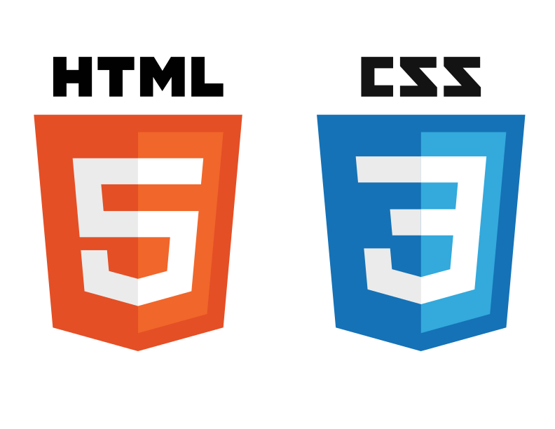

J'ai débuté en 2006 avec le langage HTML accompagné du CSS, rapidement suivi de la combinaison PHP / Mysql afin de produire des sites pouvant proposer un contenu adapté à l'utilisateur : blog, forum, ...
J'ai ensuite enchainé sur le C++ et abordé la programmation orientée objet.
Diplômé en 2010 en ingénierie de l'agriculture, école Montpellier Supagro

Un incontournable. Dans le cadre d'un projet d'applet java, je me suis tourné vers ce langage afin d'intégrer de l'interactivité à un site web personnel. Hélas les codes sources sont perdus...


A l'occasion d'un projet commun, un ami m'a fait découvrir Jquery ainsi que les requêtes ajax, la voie vers des applications modernes s'ouvrait devant moi. J'ai enchainé sur le framework bootstrap et la production "mobile first", pour des sites web s'adaptant aux différentes plateformes de navigation.


Avec l'envie de développer une application embarquée sur téléphone mobile, j'ai découvert Ionic, qui mélange les framework Angular et cordova (phonegap).


A l'occasion de ma reconversion, cette formation me permet d'apprendre le travail d'équipe en informatique, de conforter mes bases et d'apprendre de nouveaux frameworks.